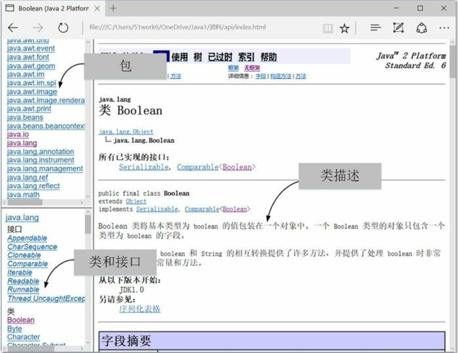
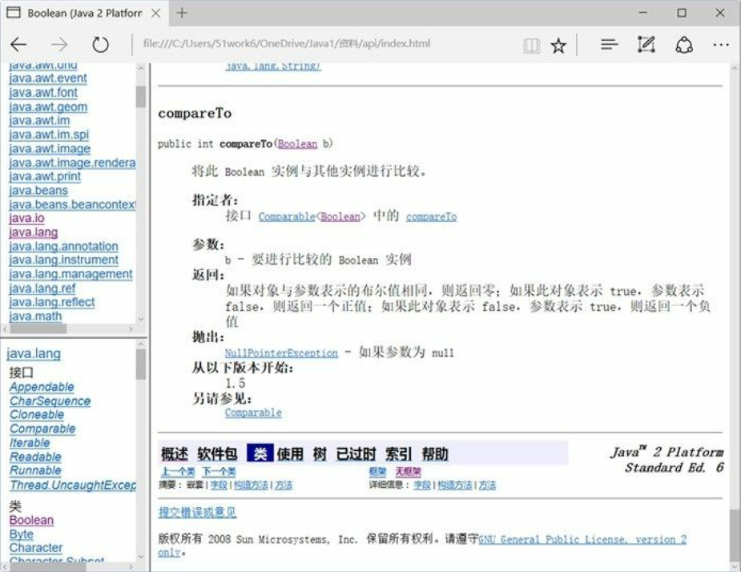
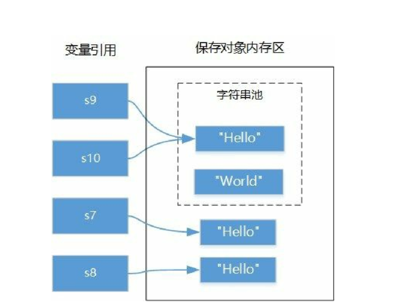
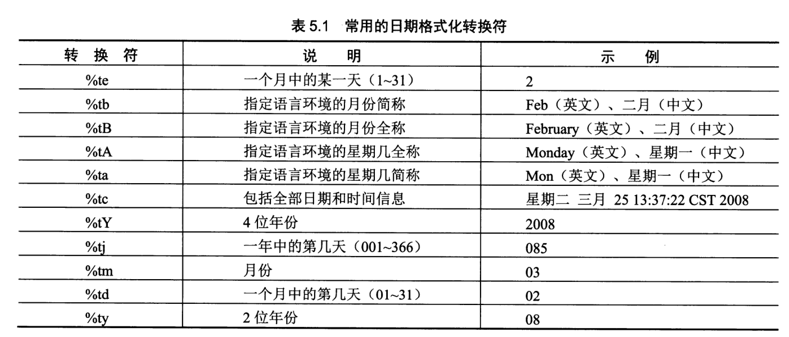
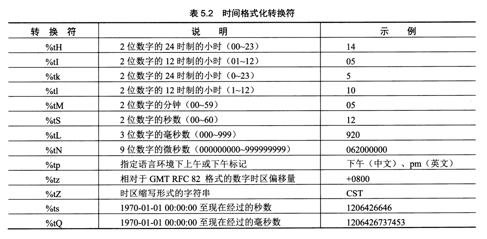
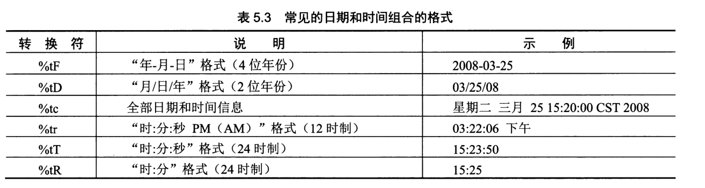
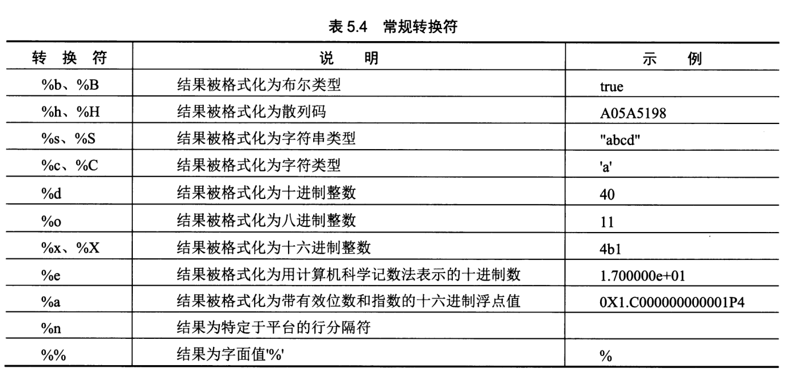
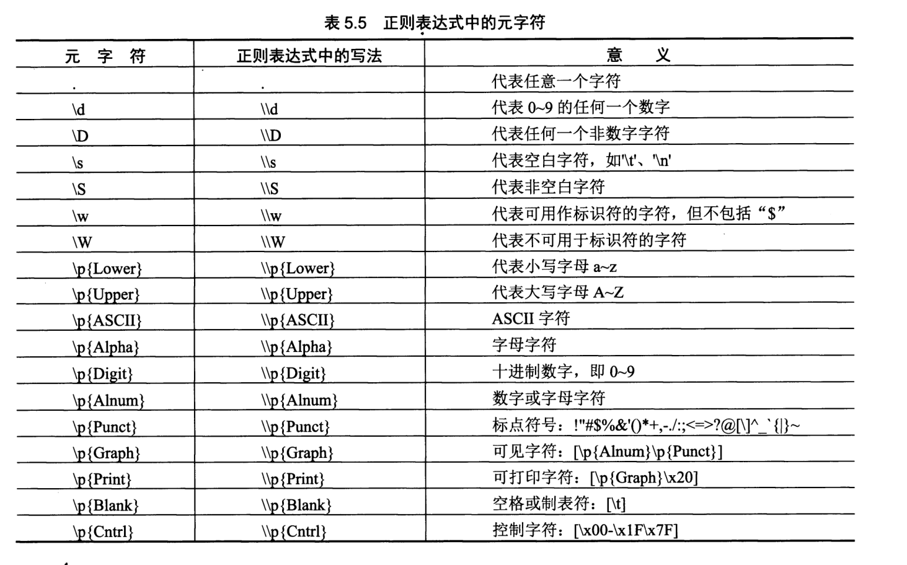
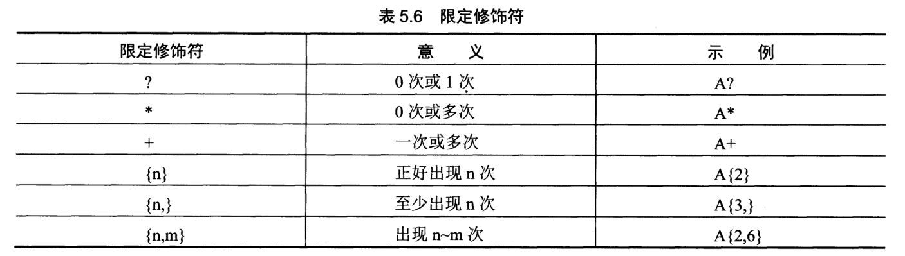

Contents
3.1. 字符串¶
3.1.1. 使用API文档¶
使用Java SE的API文档。Java官方提供了Java 8在线API文档，网址 是http://docs.oracle.com/javase/8/docs/api/
3.1.2. Java 8在线API文档¶
提示 很多读者希望能够有离线的中文Java API文档，但Java官方只提供了Java
6的中文API文档，该文件下载地址是http://download.oracle.com/technetwork/java/javase/6/docs/zh/api.zip，下载完成后解压api.zip文件，找到其中的index.html文件，双击就会在浏览器中打开API文档了。

类窗口页面其他内容
compareTo方法详细描述 查询API的一般流程是：找包→找类或接口→查看类或接口→找方法或变量。读者可以尝试查找一下String、StringBuffer和StringBuilder这些字符串类的API文档，熟悉一下这些类的用法。

3.1.3. 不可变字符串¶
String¶
创建String对象可以通过构造方法实现，常用的构造方法：
- String()：使用空字符串创建并初始化一个新的String对象。
- String(String original)：使用另外一个字符串创建并初始化一个新的 String 对象。
- String(StringBuffer buffer)：使用可变字符串对象（StringBuffer）创建并初始化一个新的 String对象。
- String(StringBuilder builder)：使用可变字符串对象（StringBuilder）创建并初始化一个新的String 对象。
- String(byte[] bytes)：使用平台的默认字符集解码指定的byte数组，通过byte数组创建并初始化一个新的 String 对象。
- String(char[] value)：通过字符数组创建并初始化一个新的 String 对象。
- String(char[] value, int offset, int count)：通过字符数组的子数组创建并初始化一个新的 String 对象；offset参数是子数组第一个字符的索引，count参数指定子数组的长度。
创建字符串对象的示例代码
package com.company;
public class Main {
public static void main(String[] args) {
// write your code here
// 创建字符串对象
String s1 = new String();
String s2 = new String("Hello World");
String s3 = new String("\u0048\u0065\u006c\u006c\u006f\u0020\u0057\u006f\u0072\u006c\u0064");
System.out.println("s2 = " + s2); //s2 = Hello World
System.out.println("s3 = " + s3); //s3 = Hello World
char chars[] = {'a', 'b', 'c', 'd', 'e'};
// 通过字符数组创建字符串对象
String s4 = new String(chars);
// 通过子字符数组创建字符串对象
String s5 = new String(chars, 1, 4);
System.out.println("s4 = " + s4); //s4 = abcde
System.out.println("s5 = " + s5); //s5 = bcde
byte bytes[] = { 97, 98, 99 };
// 通过byte数组创建字符串对象
String s6 = new String(bytes);
System.out.println("s6 = " + s6); //s6 = abc
System.out.println("s6字符串长度 = " + s6.length()); //s6字符串长度 = 3
}
}
字符串池¶
使用new关键字与字符串常量都能获得字符串对象，但它们之间有一些区别。先看下面代码运行结果：
package com.company2;
public class Main {
public static void main(String[] args) {
String s7 = new String("Hello");
String s8 = new String("Hello");
String s9 = "Hello";
String s10 = "Hello";
System.out.printf("s7 == s8 : %b%n", s7 == s8); //s7 == s8 : false
System.out.printf("s9 == s10: %b%n", s9 == s10); //s9 == s10: true
System.out.printf("s7 == s9 : %b%n", s7 == s9); //s7 == s9 : false
System.out.printf("s8 == s9 : %b%n", s8 == s9); //s8 == s9 : false
}
}

s10与s9是相同的引用，指向同一个对象,s7和s8是不同的引用，指向不同的对象。
字符串拼接¶
String字符串虽然是不可变字符串，但也可以进行拼接只是会产生一个新的对象。String字符串拼接可以使用+运算符或String的concat(String str)方法。
+运算符优势是可以连接任何类型数据拼接成为字符串，而concat方法只能拼接String类型字符串。
字符串拼接示例如下：
package com.zhijiekeji01;
public class Main {
public static void main(String[] args) {
String s1 = "Hello";
// 使用+运算符连接
String s2 = s1 + " ";
String s3 = s2 + "World";
System.out.println(s3); //Hello World
String s4 = "Hello";
// 使用+运算符连接，支持+=赋值运算符
s4 += " ";
s4 += "World";
System.out.println(s4); //Hello World
String s5 = "Hello";
// 使用concat方法连接
s5 = s5.concat(" ").concat("World");
System.out.println(s5); //Hello World
int age = 18;
String s6 = "她的年龄是" + age + "岁。"; //她的年龄是18岁。
System.out.println(s6);
char score = 'A';
String s7 = "她的英语成绩是" + score;
System.out.println(s7); //她的英语成绩是A
java.util.Date now = new java.util.Date();
//对象拼接自动调用toString()方法
String s8 = "今天是：" + now;
System.out.println(s8); //今天是：Mon Apr 20 19:52:32 CST 2020
}
}
字符串查找¶
在给定的字符串中查找字符或字符串是比较常见的操作。在String类中提供了indexOf和lastIndexOf方法用于查找字符或字符串，返回值是查找的字符或字符串所在的位置，-1表示没有找到。这两个方法有多个重载版本：
- int indexOf(int ch)：从前往后搜索字符ch，返回第一次找到字符ch所在处的索引。
- int indexOf(int ch, int fromIndex)：从指定的索引开始从前往后搜索字符ch，返回第一次找到字符ch所在处的索引。
-int indexOf(String str)：从前往后搜索字符串str，返回第一次找到字符串所在处的索引。
-int indexOf(String str, int fromIndex)：从指定的索引开始从前往后搜索字符串str，返回第一次找到字符串所在处的索引。
-int lastIndexOf(int ch)：从后往前搜索字符ch，返回第一次找到字符ch所在处的索引。
-int lastIndexOf(int ch, int fromIndex)：从指定的索引开始从后往前搜索字符ch，返回第一次找到字符ch所在处的索引。
-int lastIndexOf(String str)：从后往前搜索字符串str，返回第一次找到字符串所在处的索引。
-int lastIndexOf(String str, int fromIndex)：从指定的索引开始从后往前搜索字符串str，返回第一次找到字符串所在处的索引。
提示 字符串本质上是字符数组，因此它也有索引，索引从零开始。String的charAt(int index)方法可以返回索引index所在位置的字符。
字符串查找示例代码如下：
package com.zhijiekeji02;
public class Main {
public static void main(String[] args) {
String sourceStr = "There is a string accessing example.";
//获得字符串长度
int len = sourceStr.length();
//获得索引位置16的字符
char ch = sourceStr.charAt(16);
//查找字符和子字符串
int firstChar1 = sourceStr.indexOf('r');
int lastChar1 = sourceStr.lastIndexOf('r');
int firstStr1 = sourceStr.indexOf("ing");
int lastStr1 = sourceStr.lastIndexOf("ing");
int firstChar2 = sourceStr.indexOf('e', 15);
int lastChar2 = sourceStr.lastIndexOf('e', 15);
int firstStr2 = sourceStr.indexOf("ing", 5);
int lastStr2 = sourceStr.lastIndexOf("ing", 5);
System.out.println("原始字符串:" + sourceStr);
System.out.println("字符串长度:" + len);
System.out.println("索引16的字符:" + ch);
System.out.println("从前往后搜索r字符，第一次找到它所在索引:" + firstChar1);
System.out.println("从后往前搜索r字符，第一次找到它所在索引:" + lastChar1);
System.out.println("从前往后搜索ing字符串，第一次找到它所在索引:" + firstStr1);
System.out.println("从后往前搜索ing字符串，第一次找到它所在索引:" + lastStr1);
System.out.println("从索引为15位置开始，从前往后搜索e字符，第一次找到它所在索引:" + firstChar2);
System.out.println("从索引为15位置开始，从后往前搜索e字符，第一次找到它所在索引:" + lastChar2);
System.out.println("从索引为5位置开始，从前往后搜索ing字符串，第一次找到它所在索引:" + firstStr2);
System.out.println("从索引为5位置开始，从后往前搜索ing字符串，第一次找到它所在索引:" + lastStr2);
}
}
/*
原始字符串:There is a string accessing example.
字符串长度:36
索引16的字符:g
从前往后搜索r字符，第一次找到它所在索引:3
从后往前搜索r字符，第一次找到它所在索引:13
从前往后搜索ing字符串，第一次找到它所在索引:14
从后往前搜索ing字符串，第一次找到它所在索引:24
从索引为15位置开始，从前往后搜索e字符，第一次找到它所在索引:21
从索引为15位置开始，从后往前搜索e字符，第一次找到它所在索引:4
从索引为5位置开始，从前往后搜索ing字符串，第一次找到它所在索引:14
从索引为5位置开始，从后往前搜索ing字符串，第一次找到它所在索引:-1*/
字符串比较¶
字符串比较是常见的操作，包括比较相等、比较大小、比较前缀和后缀等。 1. 比较相等 String提供的比较字符串相等的方法：
- boolean equals(Object anObject)：比较两个字符串中内容是否相等。
- boolean equalsIgnoreCase(String anotherString)：类似equals方法，只是忽略大小写。
- 比较大小
有时不仅需要知道是否相等，还要知道大小，String提供的比较大小的方法：
- int compareTo(String anotherString)：按字典顺序比较两个字符串。如果参数字符串等于此字符串，则返回值 0；如果此字符串小于字符串参数，则返回一个小于 0 的值；如果此字符串大于字符串参数，则返回一个大于 0 的值。
- int compareToIgnoreCase(String str)：类似compareTo，只是忽略大小写。
- 比较前缀和后缀
- boolean endsWith(String suffix)：测试此字符串是否以指定的后缀结束。
- boolean startsWith(String prefix)：测试此字符串是否以指定的前缀开始
字符串比较示例代码如下：
package com.zhijiekeji03;
public class Main {
public static void main(String[] args) {
String s1 = new String("Hello");
String s2 = new String("Hello");
// 比较字符串是否是相同的引用
System.out.println("s1 == s2 : " + (s1 == s2));
// 比较字符串内容是否相等
System.out.println("s1.equals(s2) : " + (s1.equals(s2)));
String s3 = "HELlo";
// 忽略大小写比较字符串内容是否相等
System.out.println("s1.equalsIgnoreCase(s3) : " + (s1.equalsIgnoreCase(s3)));
// 比较大小
String s4 = "java";
String s5 = "Swift";
// 比较字符串大小 s4 > s5
System.out.println("s4.compareTo(s5) : " + (s4.compareTo(s5)));
// 忽略大小写比较字符串大小 s4 < s5
System.out.println("s4.compareToIgnoreCase(s5) : " + (s4.compareToIgnoreCase(s5)));
// 判断文件夹中文件名
String[] docFolder = {"java.docx", " JavaBean.docx", "Objecitve-C.xlsx", "Swift.docx "};
int wordDocCount = 0;
// 查找文件夹中Word文档个数
for (String doc : docFolder) {
// 去的前后空格
doc = doc.trim();
// 比较后缀是否有.docx字符串
if (doc.endsWith(".docx")) {
wordDocCount++;
}
}
System.out.println("文件夹中Word文档个数是： " + wordDocCount);
int javaDocCount = 0;
// 查找文件夹中Java相关文档个数
for (String doc : docFolder) {
// 去的前后空格
doc = doc.trim();
// 全部字符转成小写
doc = doc.toLowerCase();
// 比较前缀是否有java字符串
if (doc.startsWith("java")) {
javaDocCount++;
}
}
System.out.println("文件夹中Java相关文档个数是：" + javaDocCount);
}
}
/* s1 == s2 : false
s1.equals(s2) : true
s1.equalsIgnoreCase(s3) : true
s4.compareTo(s5) : 23
s4.compareToIgnoreCase(s5) : -9
文件夹中Word文档个数是： 3
文件夹中Java相关文档个数是：2*/
字符串截取¶
Java中字符串String截取方法主要的方法如下：
- String substring(int beginIndex)：从指定索引beginIndex开始截取一直到字符串结束的子字符串。
- String substring(int beginIndex, int endIndex)：从指定索引beginIndex开始截取直到索引endIndex -1处的字符，注意包括索引为beginIndex处的字符，但不包括索引为endIndex处的字符。
字符串截取方法示例代码如下：
package com.zhijiekeji04;
public class Main {
public static void main(String[] args) {
String sourceStr = "There is a string accessing example.";
// 截取example.子字符串
String subStr1 = sourceStr.substring(28);
// 截取string子字符串
String subStr2 = sourceStr.substring(11, 17);
System.out.printf("subStr1 = %s%n", subStr1);
System.out.printf("subStr2 = %s%n", subStr2);
// 使用split方法分割字符串
System.out.println("-----使用split方法-----");
String[] array = sourceStr.split(" ");
for (String str : array) {
System.out.println(str);
}
}
}
/*subStr1 = example.
subStr2 = string
-----使用split方法-----
There
is
a
string
accessing
example.*/
3.1.4. 可变字符串¶
可变字符串在追加、删除、修改、插入和拼接等操作不会产生新的对象。
StringBuffer和StringBuilder
Java提供了两个可变字符串类StringBuffer和StringBuilder，中文翻译为“字符串缓冲区”。
StringBuffer是线程安全的，它的方法是支持线程同步 ，线程同步会操作串行顺序执行，在单线程环境下会影响效率。
StringBuilder是StringBuffer单线程版本，Java 5之后发布的，它不是线程安全的，但它的执行效率很高。
StringBuffer和StringBuilder具有完全相同的API，即构造方法和普通方法等内容一样。StringBuilder的中构造方法有4个：
- StringBuilder()：创建字符串内容是空的StringBuilder对象，初始容量默认为16个字符。
- StringBuilder(CharSequence seq)：指定CharSequence字符串创建StringBuilder对象。CharSequence接口类型，它的实现类有：String、StringBuffer和StringBuilder等，所以参数seq可以是String、StringBuffer和StringBuilder等类型。
- StringBuilder(int capacity)：创建字符串内容是空的StringBuilder对象，初始容量由参数capacity指定的。
- StringBuilder(String str)：指定String字符串创建StringBuilder对象。
上述构造方法同样适合于StringBuffer类，这里不再赘述。 提示 字符串长度和字符串缓冲区容量区别。
字符串长度是指在字符串缓冲区中目前所包含字符串长度，通过length()获得；字符串缓冲区容量是缓冲区中所能容纳的最大字符数，通过capacity()获得。当所容纳的字符超过这个长度时，字符串缓冲区自动扩充容量，但这是以牺牲性能为代价的扩容。
package com.zhijikeji05;
public class Main {
public static void main(String[] args) {
// 字符串长度length和字符串缓冲区容量capacity
StringBuilder sbuilder1 = new StringBuilder();
System.out.println("包含的字符串长度：" + sbuilder1.length());
System.out.println("字符串缓冲区容量：" + sbuilder1.capacity());
StringBuilder sbuilder2 = new StringBuilder("Hello");
System.out.println("包含的字符串长度：" + sbuilder2.length());
System.out.println("字符串缓冲区容量：" + sbuilder2.capacity());
// 字符串缓冲区初始容量是16，超过之后会扩容
StringBuilder sbuilder3 = new StringBuilder();
for (int i = 0; i < 17; i++) {
sbuilder3.append(8);
}
System.out.println("包含的字符串长度：" + sbuilder3.length());
System.out.println("字符串缓冲区容量：" + sbuilder3.capacity());
}
}
/*
包含的字符串长度：0
字符串缓冲区容量：16
包含的字符串长度：5
字符串缓冲区容量：21
包含的字符串长度：17
字符串缓冲区容量：34*/
字符串追加¶
StringBuilder在提供了很多修改字符串缓冲区的方法，追加、插入、删除和替换等，这一节先介绍字符串追加方法。字符串追加方法是append，append有很多重载方法，可以追加任何类型数据，它的返回值还是StringBuilder。StringBuilder的追加法与StringBuffer完全一样。
字符串追加示例代码如下：
package com.zhijiekeji06;
public class Main {
public static void main(String[] args) {
//添加字符串、字符
StringBuilder sbuilder1 = new StringBuilder("Hello");
sbuilder1.append(" ").append("World");
sbuilder1.append('.');
System.out.println(sbuilder1);
StringBuilder sbuilder2 = new StringBuilder();
Object obj = null;
//添加布尔值、转义符和空对象
sbuilder2.append(false).append('\t').append(obj);
System.out.println(sbuilder2);
//添加数值
StringBuilder sbuilder3 = new StringBuilder();
for (int i = 0; i < 10; i++) {
sbuilder3.append(i);
}
System.out.println(sbuilder3);
}
}
/*
Hello World.
false null
0123456789*/
字符串插入、删除和替换¶
StringBuilder中实现插入、删除和替换等操作的常用方法说明如下：
- StringBuilder insert(int offset, String str)：在字符串缓冲区中索引为offset的字符位置之前插入str，insert有很多重载方法，可以插入任何类型数据。
- StringBuffer delete(int start, int end)：在字符串缓冲区中删除子字符串，要删除的子字符串从指定索引start开始直到索引end - 1处的字符。start和end两个参数与substring(int beginIndex, intendIndex)方法中的两个参数含义一样。
- StringBuffer replace(int start, int end, String str)字符串缓冲区中用str替换子字符串，子字符串从指定索引start开始直到索引end - 1处的字符。start和end同delete(int start, int end)方法。
以上介绍的方法虽然是StringBuilder方法，但StringBuffer也完全一样，
示例代码如下：
package com.zhijiekeji07;
public class Main {
public static void main(String[] args) {
// 原始不可变字符串
String str1 = "Java C";
// 从不可变的字符创建可变字符串对象
StringBuilder mstr = new StringBuilder(str1);
// 插入字符串
mstr.insert(4, " C++");
System.out.println(mstr);
// 具有追加效果的插入字符串
mstr.insert(mstr.length(), " Objective-C");
System.out.println(mstr);
// 追加字符串
mstr.append(" and Swift");
System.out.println(mstr);
// 删除字符串
mstr.delete(11, 23);
System.out.println(mstr);
}
}
/*
Java C++ C
Java C++ C Objective-C
Java C++ C Objective-C and Swift
Java C++ C and Swift*/
3.1.6. 日期和时间字符串格式化¶
1.常用的日期格式化转换符

import java.util.*;
public class Eval { // 新建类
public static void main(String[] args) { // 主方法
Date date = new Date(); // 创建Date对象date
String year = String.format("%tY", date); // 将date进行格式化
String month = String.format("%tB", date);
String day = String.format("%td", date);
System.out.println("今年是：" + year + "年"); // 输出信息
System.out.println("现在是：" + month);
System.out.println("今天是：" + day + "号");
}
}
2.常用的时间格式化转换符

import java.util.*;
public class GetDate { // 新建类
public static void main(String[] args) { // 主方法
Date date = new Date(); // 创建Date对象date
String hour = String.format("%tH", date); // 将date进行格式化
String minute = String.format("%tM", date);
String second = String.format("%tS", date);
// 输出的信息
System.out.println("现在是：" + hour + "时" + minute + "分"
+ second + "秒");
}
}
3.格式化常见的日期时间组合

import java.util.*;
public class DateAndTime { // 创建类
public static void main(String[] args) { // 主方法
Date date = new Date(); // 创建Date对象date
String time = String.format("%tc", date); // 将date格式化
String form = String.format("%tF", date);
// 将格式化后的日期时间输出
System.out.println("全部的时间信息是：" + time);
System.out.println("年-月-日格式：" + form);
}
}
3.1.7. 常规类型的格式化¶
常规类型的格式化可以用于任何的参数类型

public class General { // 新建类
public static void main(String[] args) { // 主方法
String str = String.format("%d", 400 / 2); // 将结果以十进制显示
String str2 = String.format("%b", 3 > 5); // 将结果以布尔形式显示
String str3 = String.format("%x", 200); // 将结果以十六进制格式显示
System.out.println("400的一半是：" + str); // 输出格式化字符串
System.out.println("3>5正确吗：" + str2);
System.out.println("200的十六进制数是：" + str3);
}
}
/*
400的一半是：200
3>5正确吗：false
200的十六进制数是：c8
*/
3.1.8. 使用正则表达式¶
正则表达式的元字符

正则表达式的限定修饰符

public class Judge {
public static void main(String[] args) {
// 定义要匹配E_mail地址的正则表达式
String regex = "\\w+@\\w+(\\.\\w{2,3})*\\.\\w{2,3}";
String str1 = "aaa@"; // 定义要进行验证的字符串
String str2 = "aaaaa";
String str3 = "1111@111ffyu.dfg.com";
if (str1.matches(regex)) { // 判断字符串变量是否与正则表达式匹配
System.out.println(str1 + "是一个合法的E-mail地址格式");
}
if (str2.matches(regex)) {
System.out.println(str2 + "是一个合法的E-mail地址格式");
}
if (str3.matches(regex)) {
System.out.println(str3 + "是一个合法的E-mail地址格式");
}
}
}
3.1.9. 字符串生成器¶
public class Jerque { // 新建类
public static void main(String[] args) { // 主方法
String str = ""; // 创建空字符串
// 定义对字符串执行操作的起始时间
long starTime = System.currentTimeMillis();
for (int i = 0; i < 10000; i++) { // 利用for循环执行10000次操作
str = str + i; // 循环追加字符串
}
long endTime = System.currentTimeMillis(); // 定义对字符串操作后的时间
long time = endTime - starTime; // 计算对字符串执行操作的时间
System.out.println("Sting消耗时间：" + time); // 将执行的时间输出
StringBuilder builder = new StringBuilder(""); // 创建字符串生成器
starTime = System.currentTimeMillis(); // 定义操作执行前的时间
for (int j = 0; j < 10000; j++) { // 利用for循环进行操作
builder.append(j); // 循环追加字符
}
endTime = System.currentTimeMillis(); // 定义操作后的时间
time = endTime - starTime; // 追加操作执行的时间
System.out.println("StringBuilder消耗时间：" + time); // 将操作时间输出
}
}
/*
Sting消耗时间：465
StringBuilder消耗时间：1
*/